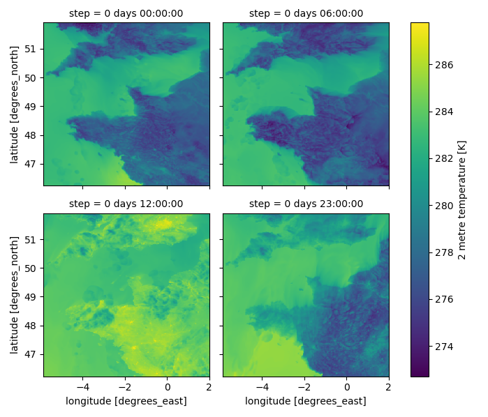

Weather Forecast Models

1. METEO FRANCE's Forecast Models
Météo-France produces several models to forecast the weather. These models are based on physical equations modelling the physical behaviours influencing the weather, such as atmospheric or oceanic phenomenons... They compute a lot of weather parameters (temperature, wind speed, humidity...) at different points on the globe in 4 dimensions (latitude, longitude, height and time).
Each model runs several times a day at a fixed time. Each execution is called a 'run'. Each time-step for which we have weather forecasts is called a 'valid time'.
On the globe's surface, the points are spaced with regular latitude and longitude steps : this mesh of points is called a grid. On the vertical axis (height), the points are not necessarily regurlarly spaced; the vertical levels can be expressed in height levels in meters or in isobar levels in hPa. The isobar are levels for which the pressure is constant.
The 2 main models of Météo-France are AROME and ARPEGE. They do no have the same purposes but they are complementary.
- ARPEGE is used to forecast the weather at a high scale in space and time.
- AROME is used to forecast the weather at a finer scale in space and time.
| Model Name | Horizontal Spatial Resolution | Number of runs per day | Time scale |
|---|---|---|---|
| ARPEGE | 0.1° (~10km) | 4 | forecasts up to 102 hours ahead |
| AROME | 0.025° (~1km) | 8 | forecasts up to 48 hours ahead |
All these characteristics are the result of compromises between the need for precision and for long time scale and the computing times and costs.
In pratice, ARPEGE is used to forecast the weather on Europe and AROME is used to forecast the weather on France.
In the dataset, we provided the results of 2D models (forecasts are on a grid longitude x latitude) and 3D models (forecasts are on a grid longitude x latitude x height).
2. 2D Parameters
Two 2D weather models are available in the dataset :
-
the fine-mesh French weather model named 'AROME'.
-
the large-mesh French weather model named 'ARPEGE'.
For each geographical zone, the two models were run each day at 00h and their forecasts range from 00h to 24h, with a time step of 1h.
For each model, the data is stored in 4 different GRIB files, depending on the vertical level of the parameters :
| File Name | Vertical Level | Forecasted Parameters |
|---|---|---|
| 2m | 2 meters | Temperature (K), Dew point (K), Telative humidity (%) |
| 10m | 10 meters | Wind speed (m.s-1), Wind direction (°), U and V wind components (m.s-1) |
| P_sea_level | sea level | Mean sea level pressure (Pa) |
| PRECIP | ground level | Total precipitation (kg.m-2 which is equivalent to mm) since the beginning of the model run |
Warning
The total precipitation parameter forecast begins at 1h, and not 0h as the other parameters. For now it is about total precipitation since the beginning of the model run. It is planned in a future version to modify that parameter in order to have the total precipitation between two time steps instead.
Info
When you open a GRIB file with the xarray library, a new associated .idx file is created.
3. 3D Parameters
One 3D weather model is avaible : the large-mesh French weather model named 'ARPEGE'.
For each geographical zone (NW and SE), the model was run each day at 00h and its forecasts range from 00h to 24h. The time-step between forecasts vary depending on the time of the day : from 0h to 12h, forecasts are available each hour, and from 12h to 24h, forecasts are available every three hours. Indeed, the model is more precise for the first hours of the days, closer to the moment the model was run, and its precision degrades as time passes.
The 3D data is stored in 2 different GRIB files, depending on the vertical level of the parameters :
| File Name | Vertical Levels | Forecasted Parameters |
|---|---|---|
| height | 20, 100, 500, 875, 1375, 2000 and 3000 m | Pressure (Pa) |
| isobar | 1000, 950, 925, 850, 700, 600 and 500 hPa | Temperature (K), Pseudo-adiabatic potential temperature of the wet bulb (K), Relative humidity (%), Wind speed (m.s-1), Wind direction (°), U and V wind components (m.s-1), vertical velocity (Pa.s-1), geopotential (m2.s-2) |